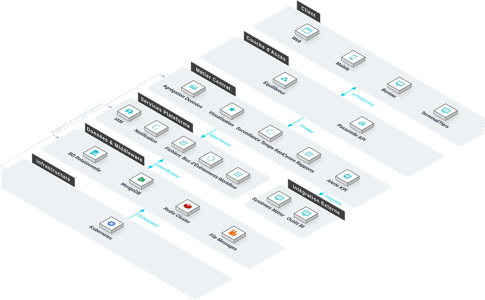

Le Système de Tableau de Bord agrège les données métier multi-sources en graphiques visuels intuitifs. Face aux défis de données dispersées et de rapports traditionnels incapables de présenter en temps réel les indicateurs clés et les tendances, le système offre l'intégration multi-sources, des graphiques riches, l'actualisation temps réel et la mise en page glisser-déposer, aidant les entreprises à prendre des décisions pilotées par les données.

Caractéristiques Clés
Le système couvre six modules : intégration, graphiques riches, temps réel, glisser-déposer, permissions et multi-terminaux.
Intégration de Données
Connecteurs standardisés agrégeant sept types de sources hétérogènes : BDD, API, Excel/CSV, IoT, ERP, MES, WMS.
Graphiques Riches
Moteur de rendu graphique et cartographique intégré, support de courbes, barres, secteurs, jauges et cartes thermiques.
Temps Réel
Moteur de push SignalR actualisant instantanément les tableaux de bord lors des changements.
Glisser-Déposer
Moteur sans code permettant aux utilisateurs d'ajuster librement position, taille et hiérarchie.
Contrôle des Permissions
Permissions fines au niveau page et données.
Multi-Terminaux
Moteur d'adaptation grand écran ajustant automatiquement aux terminaux, pan-PC, tablettes et mobiles.
Architecture du Système
Architecture du Système

Architecture intégration + rendu visuel : connecteurs standardisés agrégeant les données multi-sources ; moteur de push SignalR actualisant instantanément ; moteur d'adaptation grand écran ajustant aux terminaux ; support des applications centre de commande, cockpit PC et visualisation mobile.
Scénarios d'Application
Adapté aux grands écrans de centre de commande, à la surveillance temps réel, à l'analyse multi-sources et aux tableaux de bord par rôle.

Grand Écran Centre de Commande
Agrégation multi-sources en graphiques visuels, adaptée aux grands écrans de centre de commande pour la décision.

Surveillance Temps Réel
Moteur SignalR actualisant instantanément les tableaux de bord lors des changements, indicateurs clés en un coup d'œil.

Analyse Multi-Sources
Agrégation unifiée BDD, API, Excel/CSV, IoT, ERP, MES, WMS — brisant les silos.

Tableaux de Bord par Rôle
Permissions fines au niveau page et données, avec différents rôles voyant différents tableaux.
Avantages et garantie
Mise en page par glisser-déposer sans code
Moteur de mise en page par glisser-déposer sans code, le personnel métier peut ajuster librement la position, la taille et la hiérarchie des graphiques, la création de tableaux de bord est accessible à tous.
Actualisation des données en temps réel
Basé sur le moteur de push en temps réel SignalR, les modifications de données sont instantanément actualisées sur le tableau de bord, les informations pour la prise de décision sont toujours à jour.
Adaptation multi-terminaux
Le moteur d’adaptation pour grand écran s’ajuste automatiquement aux résolutions de différents terminaux : console de commande, PC, tablette, téléphone portable, etc. Le contenu d’un écran est utilisable sur tous les appareils.
Autorisations à granularité fine
Propose un double contrôle des autorisations à granularité fine au niveau de la page et des données, les différents rôles accèdent à des données différentes, pour une sécurité maîtrisée.
Accès à des sources de données multiples
Prend en charge la connexion à plusieurs types de sources de données : ERP, gestion de projet, IoT, etc., pour une convergence unifiée des indicateurs selon des normes communes.
Règles d’alerte flexibles
Prend en charge la configuration d’alertes automatiques selon des seuils, des tendances, des comparaisons annuelles/mensuelles, les indicateurs anormaux sont communiqués à la personne responsable dans les plus brefs délais.
Étude des besoins
Nous étudions en profondeur les besoins de visualisation de données de l’entreprise et l’état actuel des sources de données, et structurons les KPI clés et les scénarios d’utilisation des tableaux de bord.
Déploiement du système
Prend en charge le déploiement local et le déploiement sur cloud, s’adaptant aux besoins d’affichage de données de différentes tailles et aux environnements réseau.
Formation et mise en ligne
Nous proposons une formation différenciée pour les administrateurs et le personnel métier, couvrant la création de tableaux de bord, la configuration des données, la gestion des autorisations et les opérations courantes.
Maintenance continue
Support technique distant 7j/7 et 24h/24, inspections régulières du système et itérations fonctionnelles, garantie continue de la stabilité des connexions aux sources de données.
Sécurité des données
Stockage et transmission chiffrés des données des tableaux de bord, gestion des autorisations par niveaux, enregistrement complet des journaux d’opérations, prenant en charge l’audit conforme.
Mise à niveau et extension
Prend en charge l’intégration flexible de nouveaux composants graphiques et de nouveaux types de sources de données, étendant les capacités de visualisation selon les besoins de l’entreprise.